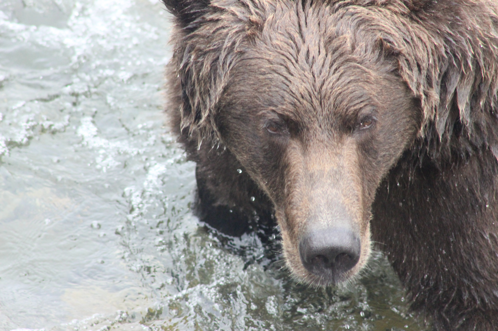

Katmai Calling I: Brown Bears at Brooks River
August 20-26, 2026
Published on October 8, 2026
“Bears are made of the same dust as we, and they breathe the same winds and drink of the same waters. A bear’s days are warmed by the same sun, his dwellings are overdomed by the same blue sky, and his life turns and ebbs with heart pulsing like ours. He was poured from the same first fountain. And whether he at last goes to our stingy Heaven or not, he has terrestrial immortality. His life, not long, not short, knows no beginning, no ending. To him life unstinted, unplanned, is above the accidents of time, and his years, markless and boundless, equal eternity.” - John Muir

One of my favorite things about Brooks Camp was the sense of community I felt over the week that I was there. It felt like summer camp for adults, and when I left, I fell into a sort of depression. Two main reasons contributed to this, I think. The first was that I had left Alaska and went from temperatures of about 50 degrees to 100 plus degrees. The second reason was that I left behind a mental state with no outside distractions coming in from society. Try and think about how much news you consume any given week and what that supply of information does to you. It’s quite a significant amount with a large negative effect, I’d bet. The loss of Dolly Parton was the only news or information from the outside world I received my entire time at Katmai. The bar at Brooks Lodge played her music all night after we learned that she had passed to honor her.
The lack of screen time was thrilling. Instead of scrolling, I spent my downtime at camp actually meeting and interacting with people who I will likely never see again. Every single interaction was rewarding and worth it. I met a middle-aged concert photographer from Asheville and we geeked out on Billy Strings and Ghost together. I met another person (also from North Carolina) who went to UT Austin like myself. There was an elderly woman camping 12 nights in a row, all by herself — I didn’t even know you could camp there that long! I met families from Alaska and the lower 48, a group of friends visiting from Utah who sent me a custom-made Katmai hat that I gave to my mom. There was another 26 year old who encouraged me to backpack in the Valley of Ten Thousand Smokes and told me not to be scared of going to Gates of the Arctic in the future.
Every single person I met at Brooks Camp, from staff to rangers to visitors, were all incredibly wholesome, encouraging, and adventurous. One evening at Brooks Lodge I started chatting with a couple from California who were about my age. I mentioned to them that I wanted to hike up to the top of Dumpling Mountain, a small mountain northwest of camp that is about 2,500 feet tall. There’s a mile-and-a-half long trail that goes to two overlooks about 900 feet up, but there is no maintained trail all the way to the top. Ryan wasn’t interested in going all the way up, and the presence of bears and thick vegetation didn’t make me want to go alone. Constant rainy and overcast skies meant I could only go if I got a good break in the weather, and the next day would be my best shot. I mentioned this to my new friends from California, and they readily agreed to try hiking it with me the following morning.

The Dumpling Mountain Hiking Club would have its first and (as of now) only meeting on Sunday, August 23rd, 2026. The three members of the club were Sam and Alex from California and myself. At 9 a.m. on that day, we set out on the maintained trail to an overlook of the area, and our plan was to continue on afterwards all the way to the top of the mountain.
Dumpling Mountain is actually slightly different from the rest of the mountains you see at and around Brooks Camp. Geologically, Dumpling is part of the Talkeetna formation, while other mountains you see from camp, like Katolinat, are part of the Naknek Formation. Different events formed Dumpling and Katolinat at different times.
The trailhead for Dumpling Mountain is at the main camp in Katmai. The trail starts gradually, ascending through the boreal forest that blankets most of the park at this elevation, just above sea level. There were a few steeper sections that I only slipped on because the ground was wet from the constant rain the area gets and my hiking boots were nearing the end of their use. The front of my boot’s sole was almost completely smooth. Trekking poles would’ve been nice on the brief steep sections. Long sleeves and pants are a must, and you should at least pack gloves. The trail is covered with cow parsnip to almost the top of the mountain. Cow parsnip is fine to touch when the plant is intact, but if you get sap on your skin and that skin is exposed to sunlight, it will painfully blister. I wore gloves on the lower section of the mountain, but as we ascended, I took them off.

The trail eventually made its way up a section where we had a nice view of Naknek Lake to the northeast. There was a rocky outcropping where we took a short break and I put on my mosquito net, another must have if you’re camping in Alaska. The trail then broke inwards through heavy brush. The first fork of our day was in front of us. Many assume that the main overlook where the dedicated trail ends is on the left side of the fork. It is not. There is a nice overlook there but much of Brooks Camp, including parts of the river, are blocked from view. We took a right at the fork and made our way up a steep rocky ascent to another outcropping. Here we had a breathtaking view of Naknek Lake and Lake Brooks with the river flowing between them. Behind the lakes were Katolinat and Mount La Gorce; hiding behind the boreal mountains and smokey clouds were the glaciated peaks of Katmai.
This overlook was a great place to take a nice break and capture some photos. From this vantage point, the entirety of camp itself was visible, too. On our left were our sleeping accommodations at camp and the lodge, as well as the visitor center. Visible at the mouth of the river was the bridge one takes to get to the Brooks Falls Trail. In the middle, Brooks River curves and winds. In the center were the Riffles and Brooks Falls, and on the right, we could see the inlet where Lake Brooks ends and Brooks River begins. This view is a timeline. For us, it represented our days. At the beginning, we would wake up, meander to the lodge for breakfast, and head towards the platforms for the day, growing just a little bit older each time, before returning to the camp and lodge. For the ground, it’s geologic history: the mountains further in the distance were much younger than the one we were standing on. As we move along one axis, nature moves on another.

Opposite the view was a break in the brush, a social trail that continues up the mountain. We were surprised to learn that there are actually more overlooks with the same view, but a little higher up each time. After these overlooks, the terrain started to become more tundra-like with a checkered pattern of dense brush and no brush. The cow parsnip still thrived here.
So did berries. Crowberries, watermelon berries, and baneberries grow on Dumpling. This season was abnormally good for berries in Katmai, with these three covering the ground almost everywhere around Brooks Camp. I had crowberries and watermelon berries that day. The crowberries tasted like a slightly sour blueberry, and the watermelon berries tasted like a seedy cucumber. Baneberries are toxic and can interfere with heart function, potentially causing severe cardiac issues. Thankfully these berries are easy to distinguish from one another. Crowberries look like small and dark blueberries, watermelon berries appear like short, fat chili peppers, and spherical baneberries grow in large red clumps up to the size of softballs.

I specifically noticed two kinds of flowers on the mountain. Fireweed was abundant on Dumpling and dominated throughout the park. I also saw monkshood (according to Wikipedia, also called wolfsbane, devil’s helmet, or my personal favorite, blue rocket). Monkshood is dangerous to touch and severely toxic if ingested. A small amount of toxins from the plant are enough to drop a human’s blood pressure and cause cardiac arrest. What’s a little scary to me is that I didn’t know this before going on the hike. It was a learning experience, I guess. Always know what plants are trying to kill you, too.


As we ascended the mountain, so did the clouds. We followed the unmaintained social trail and never lost it even in the thickest of brush. The trail eventually came to a saddled ridge on the mountain, my favorite part of the hike. Alex climbed a small rock formation to the side of the trail while Sam and I enjoyed the vantage point on the ridge. Beyond this was a short, inclined section of trail that was also the steepest part of the entire day. After briefly having to use our hands, the slopes of Dumpling became quite gradual, and the route to the broad summit became obvious right as the social trail vanished. Sam was tired and stayed behind while Alex took a break and I went for the top.


The ground was quite spongy. Despite its flat terrain and lack of large plant life, I found the top of Dumpling most difficult to move through. The ground sunk with each step you took, and there were random, loose stones on which you could easily roll an ankle if you weren’t careful. It took more physical and mental effort.
It is also more expansive than it looks. Mostly featureless, it was hard to get a sense of scale on this broad mountain. Out on the crest to my left, a tiny white speck with pointy ears and a long tail was moving along. A wolf. Too far to take a picture and barely visible, I saw it stop, look at me, and move on. We both had the exact same reaction to each other.

At the top of Dumpling was a shed and radio antenna that the rangers use presumably to communicate with park headquarters in King Salmon. I was on a quest to find one more thing, though, and that was the explore.org Dumpling Mountain camera that livestreams views of Brooks Camp to the internet. I wanted to wave hi to my family. I walked for ages around the large top of the mountain, not finding anything. Alex caught up with me and told me there was a smaller radio antenna below the summit on the side facing Lake Brooks.

Explore.org doesn’t like having humans on cameras, so if you want to be on it, use your five seconds of fame wisely. The camera was zoomed in and totally missed me altogether, but caught Alex doing a little jig. One explore.org user said in chat, “Oh my, bipedal playing on the DM cam.”

The view from here was stunning. The Sun was out, and its light reflected off the lake, bounced off of the mountains, and warmed our spirits. I only wish I could’ve stayed there in that snapshot forever, but Katmai does not behave like that. Things like clear weather and bear encounters are brief yet soul cleansing. Katmai teaches and rewards patience.

We descended the mountain the same way we came up. We hadn’t seen any people all day until we were all the way back to the maintained trail. Once back at camp, I rested and ate lunch, ready to seize the day at the bear viewing platforms.